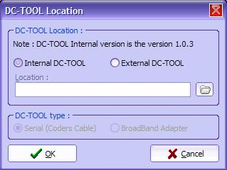
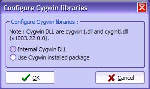

| 8. Configurer les programmes externes |
Ce chapitre montre comment changer le DC-TOOL et les DLL de Cygwin.
1) Introduction
Pourquoi changer les DLL de Cygwin ou encore le DC-TOOL?
Un exemple concret : Une nouvelle version de DC-TOOL vient d'arriver. DC-TOOL v1.0.4 (DC-LOAD-IP v1.0.4 existe déjà). Vous savez que DC-TOOL GUI utilise la version v1.0.3. Vous voulez l'utiliser immédiatement? C'est possible !
PS : Normalement vous pouvez piloter DC-LOAD v1.0.4 avec DC-TOOL v1.0.3...
2) Changer le DC-TOOL
Allez dans Config > Emplacement de DC-TOOL... . Vous aurez ensuite une boîte de dialogue :

Vous pouvez choisir la version v1.0.3 interne (par défaut). Sinon, cliquez sur DC-TOOL Externe. Choisissez ensuite le programme DC-TOOL en cliquant sur le bouton avec le dossier.
N'oubliez pas de changer le type : Si c'est pour le Coders Cable (Série) ou pour le BBA/LAN.
3) Changer les DLL de Cygwin
Pour changer les DLL de Cygwin, vous devez aller dans Config > Cygwin DLLs... . Vous aurez ensuite une autre boîte de dialogue :

Si vous choississez DLL Cygwin Interne (par défaut) vous n'avez rien à changer. Sinon, si vous disposez d'une distribution Cygwin installée, vous pouvez l'utiliser en cliquant sur Utiliser la distribution Cygwin Installée.